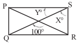

3RD Internal Assessment Examination
Session: 2026 | Topic: Mathematics | Class: IX | Full Marks: 40
Time: 80 Minutes | Date: 17-03-2026 | Slot: II | Set: B
1. নীচের প্রশ্নগুলির নির্দেশমতো উত্তর দাও:
$1 \times 6 = 6$
(i)
শূণ্যস্থান পূরণ করো: যে সকল সংখ্যাকে $\frac{p}{q}$ আকারে প্রকাশ করা যায় যেখানে $p$ এবং $q$ পূর্ণ
সংখ্যা এবং $q \ne 0$ তাদের ______ সংখ্যা বলে।
(ii)
প্রদত্ত সমীকরণগুলির কোনটির সমাধান $(1,0)$?
(iii)
যদি $(x,4)$ বিন্দুটির মূলবিন্দু থেকে দূরত্ব 5 একক হয়, তাহলে $x$ এর মান হয়—
(iv)
$8^x = 16^y$ হলে, $x:y$ এর মান হল—
(v)
$4x + 6 = 0$ সমীকরণটির লেখচিত্রটি—
(vi)
$ABCD$ সামন্তরিকের $\angle BAD = 70^\circ$ এবং $\angle BDC = 50^\circ$ হলে $\angle CBD$ এর মান
হবে—
2. নীচের প্রশ্নগুলির উত্তর দাও:
$2 \times 6 = 12$
-
(i) নীচের $PQRS$ আয়তাকার চিত্রের $X^\circ$ ও $Y^\circ$ -এর মান কত?

- (ii) $2x + 7y = 12$ এর সমাধান সেট তৈরি করো।
- (iii) একটি রম্বসের কর্ণদ্বয়ের দৈর্ঘ্য যথাক্রমে 24 সেমি ও 18 সেমি। রম্বসের প্রতিটি বাহুর দৈর্ঘ্য নির্ণয় করো।
- (iv) $r$ এর কোন্ মানের জন্য $rx - 3y - 1 = 0$ এবং $(4-r)x - y + 1 = 0$ সমীকরণদ্বয়ের সমাধান সম্ভব নহে?
- (v) $2x^2 + px + 6 = (2x - a)(x - 2)$ একটি অভেদ হলে, $a$ ও $p$ এর মান কত?
- (vi) $a=9981, b=9982, c=9983$ হলে $a^3 + b^3 + c^3 - 3abc$ এর মান নির্ণয় করো।
- (vii) $\sqrt{7}$ কে সংখ্যারেখায় স্থাপন করো।
- (viii) $f(x) = ax + b$ এবং $f(0) = 3, f(2) = 5$ হলে, $a$ ও $b$-এর মান কত?